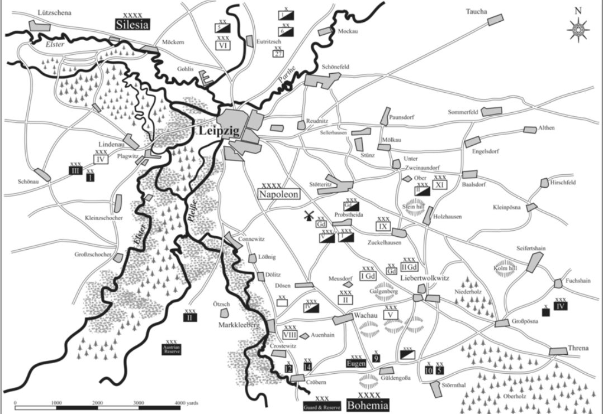
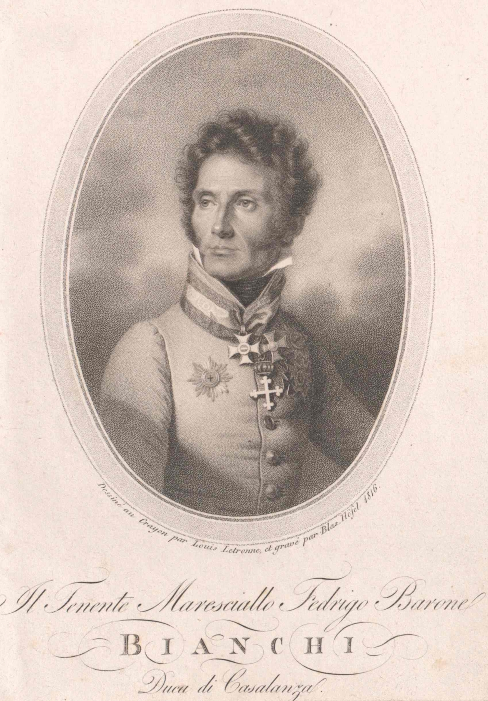
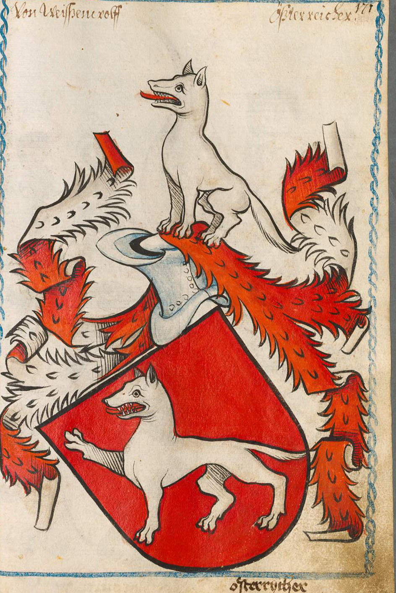
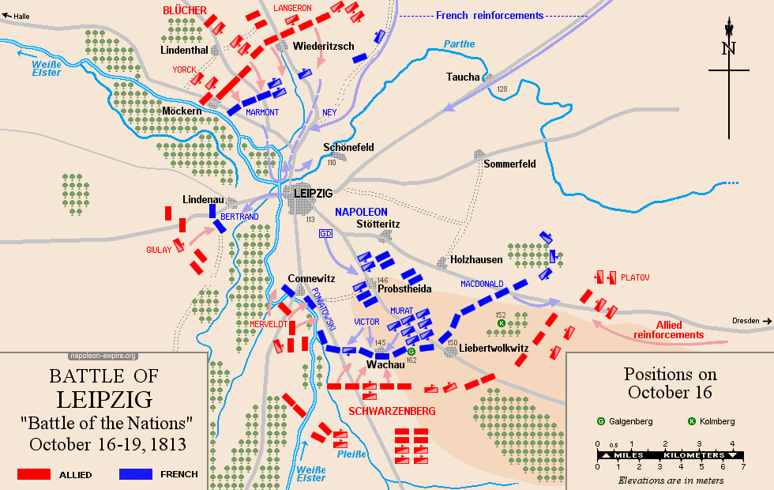
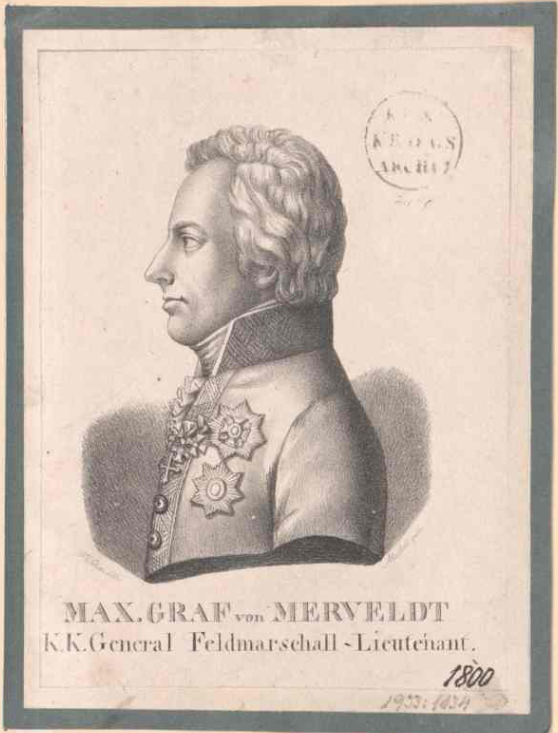

라이프치히 전투 (14) - 뜻하지 않은 소모전
게시: 2025-08-25T06:30:08+09:00
앞서 언급했던 것처럼, 이 날 오전 9시에 알렉산드르는 귈덴고사 언덕에 올라 비트겐슈타인의 공격 전개를 본 뒤에 실패를 직감하고 예비 병력의 준비를 지시한 바 있었습니다. 그에 따라 귈덴고사 바로 남쪽에는 짜르의 친동생 콘스탄틴 대공이 이끄는 러시아 근위대와 척탄병 군단이 대기하고 있었습니다. 뿐만 아니라, 알렉산드르는 지휘 체계를 무시해가며 슈바르첸베르크에게 무리하게 요구하여, 플라이서강 좌안에서 공격에 참여하기로 했던 오스트리아 예비대까지도 플라이서강 우안으로 이동시키도록 했었지요. 오후 4시, 로리스통의 제5군단 병력들이 마침내 귈덴고사 마을의 연합군 방어선을 뚫고 마을 안쪽으로 쏟아져 들어갈 때 알렉산드르가 평정심을 유지할 수 있었던 것은 바로 그 때문이었습니다. 오전부터 계속된 격전 끝에 기진맥진했던 로리스통의 병사들은 힘을 비축하며 조용히 기다리고 있다가 투입된 러시아 척탄병들과 근위대들에게 맥없이 무너져 밀려나야 했습니다. 하지만 이것으로 끝난 것은 아니었습니다. 모르티에가 이끄는 나폴레옹의 신참근위대가 투입되어 여전히 활발한 공격에 나섰고, 이들은 러시아-프로이센 근위대와 귈덴고사 일대에서 팽팽한 혈투를 벌였습니다. 전반적인 상황은 여전히 나폴레옹에게 유리했습니다. 그때 즈음해서, 마클리베르크를 지켜낸 오쥬로의 제9군단은 바하우를 지키던 빅토르의 제2군단과 합세하여, 후퇴하는 클라이스트의 러시아군 뒤를 쫓았습니다. 이들의 공격은 꽤 순조로와, 빅토르가 아우언하인을 점령한 것에 이어 오쥬로는 귈덴고사 남서쪽의 크뢰베른(Cröbern) 마을까지 치고 들어간 상황이었습니다. 귈덴고사에는 알렉산드르를 비롯한 연합군 수뇌부가 자리잡고 있었으므로 거기에 방어가 집중되느라, 나머지 방면은 연합군이 크게 밀리고 있었던 것입니다. 크뢰베른까지 함락되면 귈덴고사의 연합군 사령부는 후방까지 위협받는 위기에 빠질 판국이었습니다.

(크뢰베른의 위치는 이 지도 맨 아래 중앙부분입니다.) 하지만 알렉산드르의 준비는 서쪽에서 위력을 발휘하기 시작했습니다. 이런 위기 상황에서 크뢰베른에 나타난 것은 오스트리아군 예비대 제2사단과 함께 나타난 비안키(Vinzenz Ferrerius Friedrich Freiherr von Bianchi)였습니다. 전날 비로 인해 물이 불어난 플라이서강을 건너는데는 러시아 장군들의 주장대로 시간이 너무 오래 걸렸기 때문에, 오전 10시경 알렉산드르가 지시했던 오스트리아군 예비대의 이동이 이제서야 이루어졌던 것입니다. 이들은 클라이스트의 잔존 병력과 합세하여 빅토르와 오쥬로의 병력과 충돌했습니다. 여기서 가장 먼저 무너진 것은 역시나 가장 최근에 징집된 소년들로 편성되어 훈련과 경험이 가장 적었던 오쥬로의 제9군단이었습니다. 가장 서쪽에 있던 오쥬로의 병사들이 등을 보이고 후퇴하자, 당장 오른쪽 측면이 오스트리아군에게 훤히 노출되어 버린 빅토르의 제2군단도 아우언하인을 버리고 후퇴할 수 밖에 없었습니다. 설상가상으로, 이때 바이센볼프(Nikolaus Graf Ungnad von Weißenwolff)가 이끄는 오스트리아군 예비대 제1사단이 나타나 비안키와 합세했고, 이들은 역으로 오쥬로와 빅토르의 뒤를 추격했습니다.

(비안키 장군입니다. 이름만 보면 이탈리아 가문 출신 같습니다만, 아무튼 빈 태생의 오리지널 오스트리아인입니다. 나폴레옹보다 한 살 연상으로서, 일찍부터 대불동맹전쟁에서 뷔름저와 알빈치 장군 및에서 활약하여 나폴레옹과도 여러 차례 부딪혔습니다. 가령 브레시아 전투에서 젊은 시절의 뮈라를 포로로 잡기도 했고, 반대로 리볼리 전투에서는 자신이 나폴레옹의 포로가 되기도 했습니다. 아우스테를리츠 전투나 아스페른-에슬링, 바그람 같은 큰 전투에서는 그의 이름이 보이지 않는데, 희한하게도 뮈라와의 인연은 질겨서 나폴리 왕 자리를 지키려는 뮈라를 1815년 5월 톨렌티노(Tolentino) 전투에서 패배시킨 것이 바로 비안키였습니다.)

(독일 지명을 자꾸 다루다보니 본의 아니게 간단한 독일어를 자꾸 찾아보게 되는데, Weiß는 흰색, wolf는 늑대라는 뜻입니다. 즉, 바이센볼프 장군은 글자 그대로 '하얀 늑대' 장군인 셈입니다. 이름이 하도 인상적이라서 초상화를 찾아보았으나 그렇게까지 유명한 분은 아니었는지 찾지 못했습니다. 대신 그 가문의 문장(coat of arms)은 쉽게 찾았는데, 인상적이게도 문장에는 정말 하얀 늑대가 그려져 있습니다. 그런데 늑대보다는 약간 괴물 같네요. 이 가문의 이름은 정확하게는 그냥 von Weißenwolff가 아니라 Ungnad von Weißenwolff, 즉 '불쾌한 하얀 늑대'입니다. 전설에 따르면 이 바이센볼프 가문의 하인리히라는 귀족이 다른 귀족의 성을 포위하고 굶겨서 항복시키려 했는데, 그 공격 대상인 남작은 도중에 성을 빠져 나갔고 성에는 그 남작 부인만 남아 있었으므로 당시의 전통에 따라 여성에 대한 자비를 베풀어 포위를 풀 것으로 다들 기대했습니다. 그러나 하인리히는 고집스럽게 여자만 남은 그 성을 계속 포위하여 굶겼고, 이러자 당황하고 분노한 그 남작 부인은 성벽에 계속 Ungnad (불쾌한, 총애를 잃은, 분노한)라는 글자를 내걸었습니다. 하인리히는 이 쌍욕에 가까운 비난을 오히려 영광으로 생각하고 가문 이름을 Ungnad von Weißenwolff라고 고쳤으며, 17세기까지는 가문 이름을 짧게 말할 때는 바이센볼프를 생략하고 '운그나드'라고 부를 정도로 그걸 자랑으로 여겼다고 합니다.) 축구와 전쟁은 기세 싸움이라고, 이렇게 한 번 무너진 전선을 추스르는 것은 어려워 오쥬로는 삽시간에 마클리베르크까지 이들에게 내주고 말았고, 곧 그 북동쪽의 될리츠(Dölitz)까지 뚫릴 판국이 되었습니다. 될리츠는 바하우의 북서쪽에 위치했으므로, 될리츠가 뚫린다면 바하우 방어선도 무너질 수 밖에 없었고, 그러면 리버트볼크비츠까지 위험해질 상황이었습니다. 이런 급박한 상황에서 빛을 발한 것은 원래 마클리베르크 방면을 방어하던 포니아토프스키의 제8군단, 즉 폴란드 군단이었습니다. 오쥬로의 어린 프랑스 병사들이 지리멸렬 흩어지는 가운데에서도, 폴란드 병사들은 압도적인 병력으로 쳐들어오는 오스트리아군에게 정말 이를 악물고 저항했습니다. 이미 폴란드 본토를 러시아에게 빼앗긴 상태였던 폴란드인들로서는 여기서 나폴레옹이 무너지면 정말로 폴란드는 끝장이라는 절박함이 있었을 것입니다. 하지만 절박함만으로는 머릿수를 당해낼 수 없었습니다. 원래 오전부터 엘스터-플라이서 강변의 습지대를 뚫고 마클리베르크와 그 너머의 코네비츠를 노리던 보헤미아 방면군의 좌익, 즉 메르펠트(Maximilian von Merveldt)의 오스트리아군 제2군단은 예상보다 건너기 어려웠던 플라이서강에 막혀 고전 중이었는데, 이들이 마침내 강을 건너 합세하자, 결국 오후 5시경 될리츠는 연합군 손에 넘어가고 말았습니다.

(이쯤에서 각종 지명과 병력 배치 현황을 지도에서 정리하고 보시는 것이 좋겠습니다. 10월 16일 오전 상황입니다.) 이건 나폴레옹에게 있어 절대절명의 순간이었습니다. 애초에 슈바르첸베르크가 의도했던 것이 자신의 우익으로 나폴레옹의 전면을 묶어두고, 자신의 좌익으로는 나폴레옹의 우익, 즉 서쪽 전선 끝을 우회하여 나폴레옹의 뒤통수를 노리는 것이었는데, 우여곡절 끝에 이제 그 목적을 달성하게 된 것입니다. 나폴레옹도 슈바르첸베르크와 동일하게, 적의 우익을 우회하여 보헤미아 방면군의 뒤통수를 노리고자 했었습니다. 그러나 그를 위해 준비했던 예비군들이 여기저기 무너지는 전선을 지키는데 다 소비되어 버리고, 오직 막도날의 제11군단만이 그 우회 기동에 투입되었는데, 막도날은 오전에 콜름베르크에서 클레나우의 오스트리아군을 무찌르고 우회에 성공하는 듯 했으나, 클레나우의 병력이 워낙 우세했던지라 결국 더 이상 전과를 확대하지 못하고 있었습니다. 슈바르첸베르크와 나폴레옹이 동일한 작전을 세웠는데, 오후 5시 경 나폴레옹은 그 작전에 실패했고 슈바르첸베르크는 성공하기 일보직전이었습니다. 그런데 여기서 반전이 벌어집니다. 나폴레옹이 그토록 아끼고 아꼈던 고참근위대가 명불허전의 위력을 발휘한 것입니다. 전체 전선에서 일제 반격을 지시하면서도, 나폴레옹은 기존에 전선을 지키던 군단들이 제1선 공격을 맡도록 했고 최정예인 고참근위대 제1,2사단은 제2선에서 대기하도록 한 바 있었습니다. 이제 될리츠까지 함락되자, 그 뒤를 받치고 있던 고참근위대 제2사단이 마침내 전선에 투입되었습니다. 상대는 메르펠트의 오스트리아군 제2군단과 오스트리아 예비대 제1,2사단 전체였습니다. 아무리 고참근위대가 최정예라고 해도, 1개 사단이 2개 군단급 병력을 상대할 수는 없었습니다. 하지만 때마침 수암의 제3군단 중 제11사단이 될리츠 전선에 나타났습니다. 네가 목이 빠져라 기다리던 제3군단의 행방은 10월16일 전투 내내 나폴레옹의 최대 관심사 중 하나였는데, 그 중 제11사단은 하루 종일 이리저리 헤매이다, 결국 포성 소리를 따라 이 곳까지 당도한 것이었습니다. 이 두 개 사단은 합세하여 공격에 나섰고, 놀랍게도 오스트리아군 2개 군단을 밀어붙여 될리츠를 탈환했을 뿐만 아니라, 보헤미아 방면군 좌익을 맡았던 메르펠트 본인을 포로로 사로잡는 기염을 토했습니다.

(메르펠트 장군입니다. 나폴레옹보다 5살 연상이었던 그는 원래 오스트리아가 아니라 베스트팔렌 가문 출신으로서, 신성로마제국의 일원으로 합스부르크 가문에 충성한 사람입니다. 그는 20대 초반부터 오스트리아군에서 주로 오스만 투르크와의 싸움에서 경력을 쌓았는데, 특이하게도 도중에 1년 동안 장기 휴가를 내고 튜톤 기사단(Teutonic Order, 독일어로는 그냥 Deutscher Orden, '독일기사단')의 수습기사 생활을 하기도 했습니다. 그는 성실하고 신중한 성격상, 실제 야전 지휘관보다는 주로 외교 활동에서 많이 활약했는데, 가령 나폴레옹과의 캄포 포르미오 조약 때 오스트리아 대표단으로, 또 아우스테를리츠 전투 이후엔 주러시아 대사로 부임하기도 했습니다. 그가 라이프치히 전투에서 포로가 된 것은 그가 심한 근시라서, 폴란드군을 전투의 혼란 속에서 오스트리아군 소속 헝가리군으로 오인하고 다가갔기 때문이라고 합니다. 이렇게 포로가 된 후에도 그에겐 아직 남은 역할이 있었습니다. 그 이야기는 또 나중에...) 이렇게 라이프치히 전투 첫날은 쌍방의 지모가 빛나고 천재성이 발휘되고 뭐 그런 것 없이, 그저 밀고 밀리는 소모전 형태로 이루어졌습니다. 이런 무의미한 소모전은 결코 나폴레옹이 의도한 바가 아니었습니다. 아직 현장에 도착하지 않은 베니히센의 폴란드 방면군 등까지 합산하면 전체 병력면에서는 연합군이 훨씬 더 우세했으므로, 쌍방이 동일한 피해를 입으면 결국 연합군에게 유리한 것이기 때문이었습니다. 왜 라이프치히 전투가 이런 식으로 전개되었을까요? 그 핵심에는 블뤼허가 있었습니다. 블뤼허는 나중에 1815년 콰트르 브라(Quatre Bras)와 워털루에서 수행했던 역할을 1813년 라이프치히에서도 똑같이 해내고 있었습니다. 그 이야기는 다음 편에서 보시겠습니다. Source : The Life of Napoleon Bonaparte, by William Milligan Sloane Napoleon and the Struggle for Germany, by Leggiere, Michael V With Napoleon's Guns by Colonel Jean-Nicolas-Auguste Noël https://www.britannica.com/event/Napoleonic-Wars/Dispositions-for-the-autumn-campaign https://www.historyofwar.org/articles/battles_leipzig_16_october.html https://warhistory.org/@msw/article/leipzig-battle-of-the-nations https://www.napolun.com/mirror/napoleonistyka.atspace.com/Leipzig_battle.htm https://www.napoleon-empire.org/en/battles/leipzig.php https://en.wikipedia.org/wiki/Frederick_Bianchi,_Duke_of_Casalanza https://de.wikipedia.org/wiki/Nikolaus_Ungnad_von_Wei%C3%9Fenwolf https://de.wikipedia.org/wiki/Ungnad_von_Wei%C3%9Fenwolff https://en.wikipedia.org/wiki/Maximilian,_Count_of_Merveldt https://www.wikidata.org/wiki/Q113372